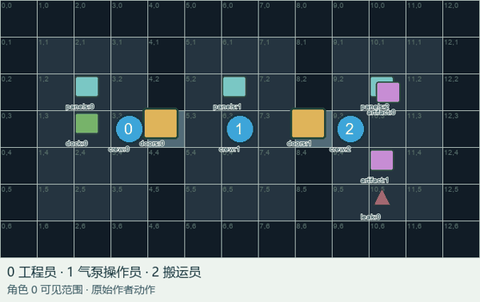
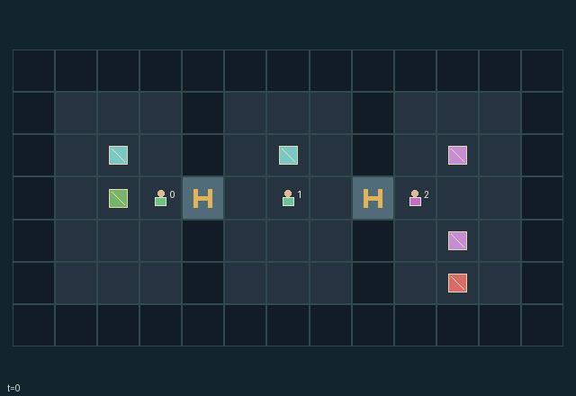

GI158 · Pressure Relay

Original recording scope: Public display view · Mode: Fixed-script demonstration
Additional generated state replay (different trajectory / full-state debug)

Bring both fragile artifacts to the west dock while keeping every crew member breathing.
Identity and original contract
3 independently actionable roles; 15 discrete commands per role; 155 native observation columns per role; original horizon 160 steps. Declared per-step reward range: -1 to 3. Observation regime: fully_observable.
Source SHA-256: cc0e1733768baa6628b753304337966e59738a9cc364bc6738d8e2625250f592
The objective, rewards, population, map and horizon remain original. A preview is not a success claim.
Objective and gameplay
Bring both fragile artifacts to the west dock while keeping every crew member breathing.
Door and vent actions redistribute room pressure; pumping and refilling compete for one finite reservoir; gifts and handoffs transfer scarce resources and artifact risk.
- Engineer patches the east leak, operator pumps air, and porter shields carried artifacts from pressure shocks.
- All crew may open doors, hold vents, transfer oxygen, and carry artifacts. A closed door can open safely only when its pressure difference is at most four.
- Forcing a door spends two oxygen. Open doors transfer up to three air units per tick; a held closed-door vent transfers up to one. The east leak then drains one.
- Pumping and tank refills draw from the same thirty-two-unit initial reserve. Low room pressure drains personal oxygen after movement.
- Non-porter cargo loses integrity when its carrier experiences a pressure jump of at least three. A handoff changes who bears that risk.
- Occupied starting cells and simultaneous destination conflicts block movement. Adjacent door/resource requests use rotating agent priority.
- Deliver both artifacts for success; zero oxygen or shattered cargo otherwise ends the expedition. Horizon: one hundred sixty transitions.
Ending: Both artifacts delivered; otherwise any zero oxygen or shattered artifact ends in failure. Success has priority on a coincident frame.
What this game explores
Resource commons & externalities: An action changes a persistent resource or burden that another role also encounters. Compare extraction with maintenance and record the downstream resource trajectory.
Complementary production & service: A useful outcome requires ordered stages, scarce equipment or another role's capability. Measure real completed products and resource circulation rather than counting intermediate actions as success.
Joint transport & shared access: Positions, load geometry, occupancy and persistent access constrain whose action can succeed next. Distinguish physical handoff, shared controls and simultaneous force from a cosmetic cooperation label.
Survival, protection & rescue: Protection and repair alter another role's future feasible actions. Record losses, exposure, rescue and infrastructure as well as delivery; survival is determined by the actual kernel.
These are questions supported by rule structure, not observed learning effects.
Play it: operating walkthrough
crucibles play --game gi158Keep Python running and open its printed address. Select this game, set a seed and press Create session. The game itself is always English.
Assign a role range to Host with Assign / take over, or Assign all roles. Invite a second participant with Create player invitation, then assign a disjoint subset. Every original role is available.
For every owned role choose a legal command and press Queue. Arrow keys / WASD queue a declared directional action for the current role camera when available. Space or Advance one joint step advances everyone together. Non-directional games use the selectors.
Unqueued roles use the labelled untrained uniform-legal policy. Take over or release roles before the next step without resetting. Full-state debug is privileged and permanently logged; role cameras preserve permissions. Close the session to retain logs. Server restart does not restore sessions.
Complete command reference
IDs and English labels exactly match the manifest. Availability depends on role, resources, location and phase. An available action can still have no productive effect.
0·Wait
1·North
2·East
3·South
4·West
5·Toggle nearest adjacent door safely
6·Force nearest adjacent door open; spend two oxygen
7·Operator pump current room at panel
8·Engineer patch leak
9·Refill breathing tank at panel
10·Pick up nearby floor artifact
11·Hand artifact to adjacent empty teammate; otherwise drop
12·Give up to three oxygen to adjacent teammate
13·Deliver carried artifact at dock
14·Hold gentle equalization vent at adjacent door
Roles and capability identifiers
These original role names describe capabilities, not interchangeable skins. Check each owned role's legal selector before planning handoffs.
agent_0·Engineer: one leak patch
agent_1·Air operator: pump from shared reserve
agent_2·Porter: pressure-proof artifact sleeve
Information and observation permissions
Fully observable public map, crew, equipment, room pressure, object and event state. All active entities are visible to all three roles. The leading one-hot identifies the observing role.
The GIF is full-state debug and may reveal hidden entities or private state. Train on obs[agent], not the picture, state tree or another role's private row. Field slices and visibility are in the original manifest.
Reinforcement-learning integration
import jax
from crucibles_jaxmarl import make
env = make("gi158")
key = jax.random.PRNGKey(0)
key, rk, ak, sk = jax.random.split(key, 4)
obs, state = jax.jit(env.reset)(rk)
actions = env.sample_actions(ak, state)
obs, state, rewards, dones, info = jax.jit(env.step_env)(sk, state, actions)
done = dones["__all__"]Observations are float32 vectors of width 155; actions are scalar int32; masks have 15 entries. Supply all 3 roles each transition. Masked sampling is an engineering reference, not a trained learner.
step_env retains terminal data without reset. step performs outer autoreset and keeps terminal data in info["raw_state"] and info["raw_observation"]. Use dones["__all__"] for episode boundaries; separate completion, failure and time limit in analysis.
JIT or vmap equal identities and shapes. Split independent reset, policy and transition keys. Group different shapes explicitly; do not shrink the population or horizon. Host rendering stays outside training.
Training questions and fair evaluation
Define valid completion from the objective before fitting. Preserve original rewards and also report real deliveries/services, losses, resource state, unresolved episodes and per-role returns. Animation is not a reward signal.
An action changes a persistent resource or burden that another role also encounters. Compare extraction with maintenance and record the downstream resource trajectory.
A useful outcome requires ordered stages, scarce equipment or another role's capability. Measure real completed products and resource circulation rather than counting intermediate actions as success.
Positions, load geometry, occupancy and persistent access constrain whose action can succeed next. Distinguish physical handoff, shared controls and simultaneous force from a cosmetic cooperation label.
Protection and repair alter another role's future feasible actions. Record losses, exposure, rescue and infrastructure as well as delivery; survival is determined by the actual kernel.
Compare memory, communication or centralized critics under matched actor information. Declare critic access; keep actor inputs role-filtered. Match partner/opponent distributions, masks, compute and checkpoint selection. Final tests never enter fitting or selection.
Independent training runs or source-pairing blocks are inferential units; episodes from one policy are not independent training replications. Save hashes, keys, versions, device, time and cost. Negative, zero, failed and indeterminate outcomes are valid. No trained checkpoint or target score is supplied.
Classification and evidence
Overlapping editorial labels are reading aids, not proof of novelty, difficulty, strategic equivalence or learning effects.
- Resource commons & externalities
- Evidence
manifest.task.objective: Bring both fragile artifacts to the west dock while keeping every crew member breathing.
- Complementary production & service
- Evidence
manifest.task.objective: Bring both fragile artifacts to the west dock while keeping every crew member breathing.
- Joint transport & shared access
- Evidence
manifest.actions.13: Deliver carried artifact at dock
- Evidence
scene.rules.0: Engineer patches the east leak, operator pumps air, and porter shields carried artifacts from pressure shocks.
- Evidence
scene.rules.1: All crew may open doors, hold vents, transfer oxygen, and carry artifacts. A closed door can open safely only when its pressure difference is at most four.
- Survival, protection & rescue
- Evidence
manifest.task.objective: Bring both fragile artifacts to the west dock while keeping every crew member breathing.
- Evidence
manifest.actions.6: Force nearest adjacent door open; spend two oxygen
- Evidence
manifest.actions.9: Refill breathing tank at panel
Source, receipts and preview limits
The additional generated state GIF replays saved untrained legal actions through the original kernel. At most 25 actual endpoints include initial and terminal state; no invented interpolation. It is full-state debug, not the role observation. Where an original scene preview exists, it is displayed first with its own recorded information scope. The two recordings may use different trajectories and views.
Original source, observation slices, manifest and mechanism
Native receipt · Presentation receipt
Engineering passes do not establish learning. Nonzero floating differences remain recorded and undetermined; no new tolerance was introduced. Human scores remain unverified.